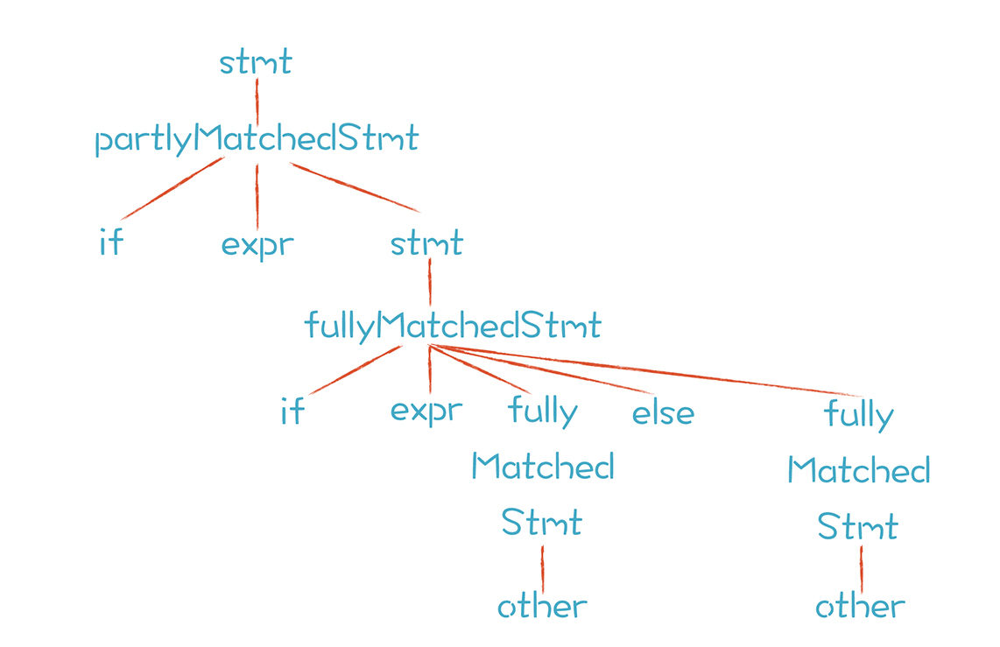

- 00 开篇词 为什么你要学习编译原理？.md.html
- 01 理解代码：编译器的前端技术.md.html
- 02 正则文法和有限自动机：纯手工打造词法分析器.md.html
- 03 语法分析（一）：纯手工打造公式计算器.md.html
- 04 语法分析（二）：解决二元表达式中的难点.md.html
- 05 语法分析（三）：实现一门简单的脚本语言.md.html
- 06 编译器前端工具（一）：用Antlr生成词法、语法分析器.md.html
- 07 编译器前端工具（二）：用Antlr重构脚本语言.md.html
- 08 作用域和生存期：实现块作用域和函数.md.html
- 09 面向对象：实现数据和方法的封装.md.html
- 10 闭包： 理解了原理，它就不反直觉了.md.html
- 11 语义分析（上）：如何建立一个完善的类型系统？.md.html
- 12 语义分析（下）：如何做上下文相关情况的处理？.md.html
- 13 继承和多态：面向对象运行期的动态特性.md.html
- 14 前端技术应用（一）：如何透明地支持数据库分库分表？.md.html
- 15 前端技术应用（二）：如何设计一个报表工具？.md.html
- 16 NFA和DFA：如何自己实现一个正则表达式工具？.md.html
- 17 First和Follow集合：用LL算法推演一个实例.md.html
- 18 移进和规约：用LR算法推演一个实例.md.html
- 19 案例总结与热点问题答疑：对于左递归的语法，为什么我的推导不是左递归的？.md.html
- 20 高效运行：编译器的后端技术.md.html
- 21 运行时机制：突破现象看本质，透过语法看运行时.md.html
- 22 生成汇编代码（一）：汇编语言其实不难学.md.html
- 23 生成汇编代码（二）：把脚本编译成可执行文件.md.html
- 24 中间代码：兼容不同的语言和硬件.md.html
- 25 后端技术的重用：LLVM不仅仅让你高效.md.html
- 26 生成IR：实现静态编译的语言.md.html
- 27 代码优化：为什么你的代码比他的更高效？.md.html
- 28 数据流分析：你写的程序，它更懂.md.html
- 29 目标代码的生成和优化（一）：如何适应各种硬件架构？.md.html
- 30 目标代码的生成和优化（二）：如何适应各种硬件架构？.md.html
- 31 内存计算：对海量数据做计算，到底可以有多快？.md.html
- 32 字节码生成：为什么Spring技术很强大？.md.html
- 33 垃圾收集：能否不停下整个世界？.md.html
- 34 运行时优化：即时编译的原理和作用.md.html
- 35 案例总结与热点问题答疑：后端部分真的比前端部分难吗？.md.html
- 36 当前技术的发展趋势以及其对编译技术的影响.md.html
- 37 云编程：云计算会如何改变编程模式？.md.html
- 38 元编程：一边写程序，一边写语言.md.html
- 加餐 汇编代码编程与栈帧管理.md.html
- 用户故事 因为热爱，所以坚持.md.html
- 第二季回归 这次，我们一起实战解析真实世界的编译器.md.html
- 结束语 用程序语言，推动这个世界的演化.md.html
- 捐赠
07 编译器前端工具（二）：用Antlr重构脚本语言
上一讲，我带你用Antlr生成了词法分析器和语法分析器，也带你分析了，跟一门成熟的语言相比，在词法规则和语法规则方面要做的一些工作。
在词法方面，我们参考Java的词法规则文件，形成了一个CommonLexer.g4词法文件。在这个过程中，我们研究了更完善的字符串字面量的词法规则，还讲到要通过规则声明的前后顺序来解决优先级问题，比如关键字的规则一定要在标识符的前面。
目前来讲，我们已经完善了词法规则，所以今天我们来补充和完善一下语法规则，看一看怎样用最高效的速度，完善语法功能。比如一天之内，我们是否能为某个需要编译技术的项目实现一个可行性原型？
而且，我还会带你熟悉一下常见语法设计的最佳实践。这样当后面的项目需要编译技术做支撑时，你就会很快上手，做出成绩了！
接下来，我们先把表达式的语法规则梳理一遍，让它达到成熟语言的级别，然后再把语句梳理一遍，包括前面几乎没有讲过的流程控制语句。最后再升级解释器，用Visitor模式实现对AST的访问，这样我们的代码会更清晰，更容易维护了。
好了，让我们正式进入课程，先将表达式的语法完善一下吧！
完善表达式（Expression）的语法
在“06 | 编译器前端工具（一）：用Antlr生成词法、语法分析器”中，我提到Antlr能自动处理左递归的问题，所以在写表达式时，我们可以大胆地写成左递归的形式，节省时间。
但这样，我们还是要为每个运算写一个规则，逻辑运算写完了要写加法运算，加法运算写完了写乘法运算，这样才能实现对优先级的支持，还是有些麻烦。
其实，Antlr能进一步地帮助我们。我们可以把所有的运算都用一个语法规则来涵盖，然后用最简洁的方式支持表达式的优先级和结合性。在我建立的PlayScript.g4语法规则文件中，只用了一小段代码就将所有的表达式规则描述完了：
expression
: primary
| expression bop='.'
( IDENTIFIER
| functionCall
| THIS
)
| expression '[' expression ']'
| functionCall
| expression postfix=('++' | '--')
| prefix=('+'|'-'|'++'|'--') expression
| prefix=('~'|'!') expression
| expression bop=('*'|'/'|'%') expression
| expression bop=('+'|'-') expression
| expression ('<' '<' | '>' '>' '>' | '>' '>') expression
| expression bop=('<=' | '>=' | '>' | '<') expression
| expression bop=INSTANCEOF typeType
| expression bop=('==' | '!=') expression
| expression bop='&' expression
| expression bop='^' expression
| expression bop='|' expression
| expression bop='&&' expression
| expression bop='||' expression
| expression bop='?' expression ':' expression
| <assoc=right> expression
bop=('=' | '+=' | '-=' | '*=' | '/=' | '&=' | '|=' | '^=' | '>>=' | '>>>=' | '<<=' | '%=')
expression
;
这个文件几乎包括了我们需要的所有的表达式规则，包括几乎没提到的点符号表达式、递增和递减表达式、数组表达式、位运算表达式规则等，已经很完善了。
那么它是怎样支持优先级的呢？原来，优先级是通过右侧不同产生式的顺序决定的。在标准的上下文无关文法中，产生式的顺序是无关的，但在具体的算法中，会按照确定的顺序来尝试各个产生式。
你不可能一会儿按这个顺序，一会儿按那个顺序。然而，同样的文法，按照不同的顺序来推导的时候，得到的AST可能是不同的。我们需要注意，这一点从文法理论的角度，是无法接受的，但从实践的角度，是可以接受的。比如LL文法和LR文法的概念，是指这个文法在LL算法或LR算法下是工作正常的。又比如我们之前做加法运算的那个文法，就是递归项放在右边的那个，在递归下降算法中会引起结合性的错误，但是如果用LR算法，就完全没有这个问题，生成的AST完全正确。
additiveExpression
: IntLiteral
| IntLiteral Plus additiveExpression
;
Antlr的这个语法实际上是把产生式的顺序赋予了额外的含义，用来表示优先级，提供给算法。所以，我们可以说这些文法是Antlr文法，因为是与Antlr的算法相匹配的。当然，这只是我起的一个名字，方便你理解，免得你产生困扰。
我们再来看看Antlr是如何依据这个语法规则实现结合性的。在语法文件中，Antlr对于赋值表达式做了
我们不妨继续猜测一下Antlr内部的实现机制。我们已经分析了保证正确的结合性的算法，比如把递归转化成循环，然后在构造AST时，确定正确的父子节点关系。那么Antlr是不是也采用了这样的思路呢？或者说还有其他方法？你可以去看看Antlr生成的代码验证一下。
在思考这个问题的同时你会发现，学习原理是很有用的。因为当你面对Antlr这样工具时，能够猜出它的实现机制。
通过这个简化的算法，AST被成功简化，不再有加法节点、乘法节点等各种不同的节点，而是统一为表达式节点。你可能会问了：“如果都是同样的表达式节点，怎么在解析器里把它们区分开呢？怎么知道哪个节点是做加法运算或乘法运算呢？”
很简单，我们可以查找一下当前节点有没有某个运算符的Token。比如，如果出现了或者运算的Token（“||”），就是做逻辑或运算，而且语法里面的bop=、postfix=、prefix=这些属性，作为某些运算符Token的别名，也会成为表达式节点的属性。通过查询这些属性的值，你可以很快确定当前运算的类型。
到目前为止，我们彻底完成了表达式的语法工作，可以放心大胆地在脚本语言里使用各种表达式，把精力放在完善各类语句的语法工作上了。
完善各类语句（Statement）的语法
我先带你分析一下PlayScript.g4文件中语句的规则：
statement
: blockLabel=block
| IF parExpression statement (ELSE statement)?
| FOR '(' forControl ')' statement
| WHILE parExpression statement
| DO statement WHILE parExpression ';'
| SWITCH parExpression '{' switchBlockStatementGroup* switchLabel* '}'
| RETURN expression? ';'
| BREAK IDENTIFIER? ';'
| SEMI
| statementExpression=expression ';'
;
同表达式一样，一个statement规则就可以涵盖各类常用语句，包括if语句、for循环语句、while循环语句、switch语句、return语句等等。表达式后面加一个分号，也是一种语句，叫做表达式语句。
从语法分析的难度来看，上面这些语句的语法比表达式的语法简单的多，左递归、优先级和结合性的问题这里都没有出现。这也算先难后易，苦尽甘来了吧。实际上，我们后面要设计的很多语法，都没有想象中那么复杂。
既然我们尝到了一些甜头，不如趁热打铁，深入研究一下if语句和for语句？看看怎么写这些语句的规则？多做这样的训练，再看到这些语句，你的脑海里就能马上反映出它的语法规则。
1.研究一下if语句
在C和Java等语言中，if语句通常写成下面的样子：
if (condition)
做一件事情;
else
做另一件事情;
但更多情况下，if和else后面是花括号起止的一个语句块，比如：
if (condition){
做一些事情；
}
else{
做另一些事情；
}
它的语法规则是这样的：
statement :
...
| IF parExpression statement (ELSE statement)?
...
;
parExpression : '(' expression ')';
我们用了IF和ELSE这两个关键字，也复用了已经定义好的语句规则和表达式规则。你看，语句规则和表达式规则一旦设计完毕，就可以被其他语法规则复用，多么省心！
但是if语句也有让人不省心的地方，比如会涉及到二义性文法问题。所以，接下来我们就借if语句，分析一下二义性文法这个现象。
2.解决二义性文法
学计算机语言的时候，提到if语句，会特别提一下嵌套if语句和悬挂else的情况，比如下面这段代码：
if (a > b)
if (c > d)
做一些事情；
else
做另外一些事情；
在上面的代码中，我故意取消了代码的缩进。那么，你能不能看出else是跟哪个if配对的呢？
一旦你语法规则写得不够好，就很可能形成二义性，也就是用同一个语法规则可以推导出两个不同的句子，或者说生成两个不同的AST。这种文法叫做二义性文法，比如下面这种写法：
stmt -> if expr stmt
| if expr stmt else stmt
| other
按照这个语法规则，先采用第一条产生式推导或先采用第二条产生式推导，会得到不同的AST。左边的这棵AST中，else跟第二个if配对；右边的这棵AST中，else跟第一个if配对。

大多数高级语言在解析这个示例代码时都会产生第一个AST，即else跟最邻近的if配对，也就是下面这段带缩进的代码表达的意思：
if (a > b)
if (c > d)
做一些事情；
else
做另外一些事情；
那么，有没有办法把语法写成没有二义性的呢？当然有了。
stmt -> fullyMatchedStmt | partlyMatchedStmt
fullyMatchedStmt -> if expr fullyMatchedStmt else fullyMatchedStmt
| other
partlyMatchedStmt -> if expr stmt
| if expr fullyMatchedStmt else partlyMatchedStmt
按照上面的语法规则，只有唯一的推导方式，也只能生成唯一的AST：

其中，解析第一个if语句时只能应用partlyMatchedStmt规则，解析第二个if语句时，只能适用fullyMatchedStmt规则。
这时，我们就知道可以通过改写语法规则来解决二义性文法。至于怎么改写规则，确实不像左递归那样有清晰的套路，但是可以多借鉴成熟的经验。
再说回我们给Antlr定义的语法，这个语法似乎并不复杂，怎么就能确保不出现二义性问题呢？因为Antlr解析语法时用到的是LL算法。
LL算法是一个深度优先的算法，所以在解析到第一个statement时，就会建立下一级的if节点，在下一级节点里会把else子句解析掉。如果Antlr不用LL算法，就会产生二义性。这再次验证了我们前面说的那个知识点：文法要经常和解析算法配合。
分析完if语句，并借它说明了二义性文法之后，我们再针对for语句做一个案例研究。
3.研究一下for语句
for语句一般写成下面的样子：
for (int i = 0; i < 10; i++){
println(i);
}
相关的语法规则如下：
statement :
...
| FOR '(' forControl ')' statement
...
;
forControl
: forInit? ';' expression? ';' forUpdate=expressionList?
;
forInit
: variableDeclarators
| expressionList
;
expressionList
: expression (',' expression)*
;
从上面的语法规则中看到，for语句归根到底是由语句、表达式和变量声明构成的。代码中的for语句，解析后形成的AST如下：

熟悉了for语句的语法之后，我想提一下语句块（block）。在if语句和for语句中，会用到它，所以我捎带着把语句块的语法构成写了一下，供你参考：
block
: '{' blockStatements '}'
;
blockStatements
: blockStatement*
;
blockStatement
: variableDeclarators ';' //变量声明
| statement
| functionDeclaration //函数声明
| classDeclaration //类声明
;
现在，我们已经拥有了一个相当不错的语法体系，除了要放到后面去讲的函数、类有关的语法之外，我们几乎完成了playscript的所有的语法设计工作。接下来，我们再升级一下脚本解释器，让它能够支持更多的语法，同时通过使用Visitor模式，让代码结构更加完善。
用Vistor模式升级脚本解释器
我们在纯手工编写的脚本语言解释器里，用了一个evaluate()方法自上而下地遍历了整棵树。随着要处理的语法越来越多，这个方法的代码量会越来越大，不便于维护。而Visitor设计模式针对每一种AST节点，都会有一个单独的方法来负责处理，能够让代码更清晰，也更便于维护。
Antlr能帮我们生成一个Visitor处理模式的框架，我们在命令行输入：
antlr -visitor PlayScript.g4
-visitor参数告诉Antlr生成下面两个接口和类：
public interface PlayScriptVisitor<T> extends ParseTreeVisitor<T> {...}
public class PlayScriptBaseVisitor<T> extends AbstractParseTreeVisitor<T> implements PlayScriptVisitor<T> {...}
在PlayScriptBaseVisitor中，可以看到很多visitXXX()这样的方法，每一种AST节点都对应一个方法，例如：
@Override public T visitPrimitiveType(PlayScriptParser.PrimitiveTypeContext ctx) {...}
其中泛型< T >指的是访问每个节点时返回的数据的类型。在我们手工编写的版本里，当时只处理整数，所以返回值一律用Integer，现在我们实现的版本要高级一点，AST节点可能返回各种类型的数据，比如：
- 浮点型运算的时候，会返回浮点数；
- 字符类型运算的时候，会返回字符型数据；
- 还可能是程序员自己设计的类型，如某个类的实例。
所以，我们就让Visitor统一返回Object类型好了，能够适用于各种情况。这样，我们的Visitor就是下面的样子（泛型采用了Object）：
public class MyVisitor extends PlayScriptBaseVisitor<Object>{
...
}
这样，在visitExpression()方法中，我们可以编写各种表达式求值的代码，比如，加法和减法运算的代码如下：
public Object visitExpression(ExpressionContext ctx) {
Object rtn = null;
//二元表达式
if (ctx.bop != null && ctx.expression().size() >= 2) {
Object left = visitExpression(ctx.expression(0));
Object right = visitExpression(ctx.expression(1));
...
Type type = cr.node2Type.get(ctx);//数据类型是语义分析的成果
switch (ctx.bop.getType()) {
case PlayScriptParser.ADD: //加法运算
rtn = add(leftObject, rightObject, type);
break;
case PlayScriptParser.SUB: //减法运算
rtn = minus(leftObject, rightObject, type);
break;
...
}
}
...
}
其中ExpressionContext就是AST中表达式的节点，叫做Context，意思是你能从中取出这个节点所有的上下文信息，包括父节点、子节点等。其中，每个子节点的名称跟语法中的名称是一致的，比如加减法语法规则是下面这样：
expression bop=('+'|'-') expression
那么我们可以用ExpressionContext的这些方法访问子节点：
ctx.expression(); //返回一个列表，里面有两个成员，分别是左右两边的子节点
ctx.expression(0); //运算符左边的表达式，是另一个ExpressionContext对象
ctx.expression(1); //云算法右边的表达式
ctx.bop(); //一个Token对象，其类型是PlayScriptParser.ADD或SUB
ctx.ADD(); //访问ADD终结符，当做加法运算的时候，该方法返回非空值
ctx.MINUS()； //访问MINUS终结符
在做加法运算的时候我们还可以递归的对下级节点求值，就像代码里的visitExpression(ctx.expression(0))。同样，要想运行整个脚本，我们只需要visit根节点就行了。
所以，我们可以用这样的方式，为每个AST节点实现一个visit方法。从而把整个解释器升级一遍。除了实现表达式求值，我们还可以为今天设计的if语句、for语句来编写求值逻辑。以for语句为例，代码如下：
// 初始化部分执行一次
if (forControl.forInit() != null) {
rtn = visitForInit(forControl.forInit());
}
while (true) {
Boolean condition = true; // 如果没有条件判断部分，意味着一直循环
if (forControl.expression() != null) {
condition = (Boolean) visitExpression(forControl.expression());
}
if (condition) {
// 执行for的语句体
rtn = visitStatement(ctx.statement(0));
// 执行forUpdate，通常是“i++”这样的语句。这个执行顺序不能出错。
if (forControl.forUpdate != null) {
visitExpressionList(forControl.forUpdate);
}
} else {
break;
}
}
你需要注意for语句中各个部分的执行规则，比如：
- forInit部分只能执行一次；
- 每次循环都要执行一次forControl，看看是否继续循环；
- 接着执行for语句中的语句体；
- 最后执行forUpdate部分，通常是一些“i++”这样的语句。
支持了这些流程控制语句以后，我们的脚本语言就更丰富了！
课程小结
今天，我带你用Antlr高效地完成了很多语法分析工作，比如完善表达式体系，完善语句体系。除此之外，我们还升级了脚本解释器，使它能够执行更多的表达式和语句。
在实际工作中，针对面临的具体问题，我们完全可以像今天这样迅速地建立可以运行的代码，专注于解决领域问题，快速发挥编译技术的威力。
而且在使用工具时，针对工具的某个特性，比如对优先级和结合性的支持，我们大致能够猜到工具内部的实现机制，因为我们已经了解了相关原理。
一课一思
我们通过Antlr并借鉴成熟的规则文件，很快就重构了脚本解释器，这样工作效率很高。那么，针对要解决的领域问题，你是不是借鉴过一些成熟实践或者最佳实践来提升效率和质量？在这个过程中又有什么心得呢？欢迎在留言区分享你的心得。
最后，感谢你的阅读，如果这篇文章让你有所收获，也欢迎你将它分享给更多的朋友。
我把一门功能比较全的脚本语言的示例放在了playscript-java项目下，以后几讲的内容都会参考这里面的示例代码。
© 2019 - 2023 Liangliang Lee. Powered by gin and hexo-theme-book.